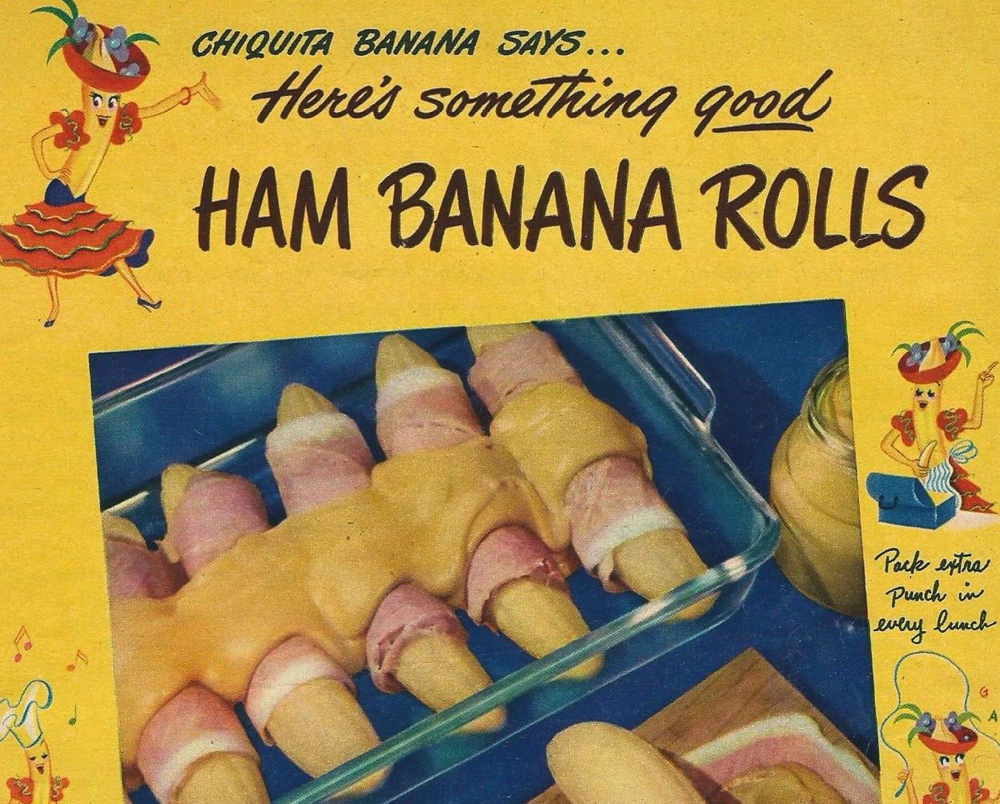

Once people get over their initial repulsion over the idea of this recipe, their first question is inevitably “What does it taste like?”
First, unripe bananas – even after baking – have a starch-to-sugar ratio of 25:1 (a ratio that changes dramatically to 1:20 when ripened). So if you’re expecting a bizarre combination of savory and sweet, you’ll be disappointed. Unripened bananas and plantains are much more related to potatoes than fruits. A friend of mine described the flavor of the baked banana as being similar to baked artichoke hearts. And so much of what you taste is the sweetness of the ham, a bit of tang from the mustard, and the zip from whatever kind of cheese you use from the sauce.
Spread each slice of ham lightly with mustard. Wrap a slice of the prepared ham around each banana. Place in a buttered shallow baking pan and pour cheese sauce over bananas. Bake in a moderate oven (350F) 30 minutes, or until bananas are tender… easily pierced with a fork.Six servings. Serve hot with cheese sauce from the pan poured over each roll.
Melt butter, add flour and stir until smooth. Stir in milk slowly. Add cheese and cook, stirring constantly until sauce is smooth and thickened. Makes about 1 cup sauce.